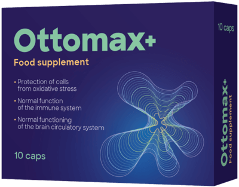

VEZETŐ HALLÁSSZAKÉRTŐ: "AZ ÉRZÉKELŐ SEJTEK ÉS A KÖZÉPFÜL KORRAL JÁRÓ ELVÁLTOZÁSAI SÜKETSÉGHEZ VEZETNEK. VAN MÓD A MEGMENEKÜLÉSRE, DE EZ NEM MINDENKI SZÁMÁRA ELÉRHETŐ".

Takácsné Karola: "Garantálom, hogy minden budapesti hallásproblémával küzdő ember olyan készítményt kap, amely segít helyreállítani a hallását és megelőzni a süketséget."
Takácsné Karola, a budapesti audiológia vezető szakértőjének sajtótájékoztatójáról: "A 45 év felettiek több mint fele elveszíti hallását az érzékelősejtek és a középfül korral összefüggő változásai miatt. A műtét haszontalan és veszélyes. Minden negyedik ember teljesen megsüketül".
Exkluzív interjú Takácsné Karolával: "Miért veszítik el az emberek gyorsan a hallásukat 45 éves koruk után, és hogyan menthetik meg magukat a teljes süketségtől?"

Tudósító: Miért tartja komoly problémának az időskori halláskárosodást?
Takácsné Karola:Takácsné Karola: Tudja, hány ember süketült meg teljesen 2021-ben? Régiónkban 34 ezer ember teljesen megsüketült. Körülbelül 55 ezer ember van a süketség határán. Ez azt jelenti, hogy 90 000 ember gyakorlatilag elvesztette a hallását. A középfül és az érzékelő sejtek életkorral összefüggő változásai fizikai állapottól függetlenül mindenkinél előfordulnak. És míg 50 évvel ezelőtt a hallás megterhelése nem volt ilyen nagy, addig mostanra a városi zaj nagyságrendekkel rosszabb lett.
Ezért tartom a halláskárosodást rendkívül veszélyes betegségnek, amely jelenleg a betegségek között az első helyen áll. Mindenki ismeri a rákot és más daganatos megbetegedéseket, de lássuk be, a rák az emberek 3-4%-ánál fordul elő, és 40-45 éves kor után mindenkinél előfordul halláskárosodás.
Tudósító: Miért nem mondanak erről semmit? Miért hallgatják el ezt a problémát?
Takácsné Karola: Először is, az emberek gyakran az utolsó pillanatban kérnek segítséget. Azaz csak akkor, ha a betegség már előrehaladott stádiumban van, és már szinte nem hallanak. Már csak a műtét vagy a hallókészülék marad.
Másodszor, az emberek nagyon gyakran úgy gondolják, hogy a halláskárosodás ellen szinte lehetetlen küzdeni. Még mindig él az a felfogás, hogy a hallóideg degenerációja visszafordíthatatlan folyamat. Bár a tudomány előrelépett, és bebizonyította, hogy a halláskárosodás ellen lehet és kell is küzdeni, még mindig úgy gondolkodunk, mint a 70-es és 80-as években.
Tudósító: A modern megközelítés hiánya miatt alakult ki a hallászavarok ilyen éles problémája?
Takácsné Karola: Nem csak ez. Akut hiány van a halláskárosodás megelőzésére szolgáló normális készítményekből. A gyógyszertárak mindent árulnak, kivéve azokat, amelyek valóban segíthetnek. Vagy régi készítményeket, amelyek nem sokat segítenek, vagy valami újmódi hamisítványokat, amelyek drágák, de kevés jót tesznek. Ismétlem, a gyógyszerészek nagyon hajlamosak arra, hogy mindent felajánljanak, ami eszükbe jut. Gyakran vannak olyan készítmények, amelyek átmenetileg segíthetnek, de hatással vannak a test többi rendszerére, így a következmények rendkívül veszélyesek lehetnek. A legtöbb készítmény pedig nem arra szolgál, hogy valóban segítsen, csak átmenetileg fejt ki hatást.
A fentiek mindegyike ilyen szörnyű eredményt ad. Az emberek nem kapnak segítséget a modern szabványok szerint, és hallókészüléket kell viselniük. Természetesen vannak magánklinikák is. De még ott sem mindig ismerik az innovatív technikákat. A magánklinikáknak egyetlen céljuk, hogy minél több pénzt kapjanak. Nem akarnak igazán segíteni.
Tudósító: Mit tegyenek akkor a halláskárosultak? Várják a teljes süketséget és rokkantságot? Ön elismert szakértő, ha ismeri a problémát, akkor valahogy azt meg kell oldani!
Takácsné Karola: Természetesen nem ülök tétlenül. Oktató vagyok, új megközelítésekről beszélek. Azoknak segítek, akik közvetlenül hozzám fordulnak. Erre a problémára azonban nincs gyors megoldás. Egyébként ez a helyzet nem csak ránk jellemző. A szomszédos régiókból származó kollégákkal kommunikálok, szinte mindenhol ugyanaz a helyzet.
De van egy fényes pont ebben az emberek életéért folytatott küzdelemben. Sikerült rávennem egy jól ismert jótékonysági szervezetet, a Nemzeti Egészségügyi Alapítványt, hogy indítson el egy kedvezményes programot. Olyan új terméket forgalmaz, amely segít a hallásproblémák teljes kiküszöbölésében és visszaszerzésében bármely életkorban. A program teljes egészében 6 hónapon belül indul. Városunk lakói azonban már most hozzájuthatnak, hat hónappal korábban, mint az ország más régióinak lakói.
Tudósító: Miből gondolja, hogy változást fog hozni?
Takácsné Karola: Már bebizonyosodott, hogy a halláscsökkenés egyetlen problémája az emberi hallókészülék ereinek fokozatos elszennyeződése. Ennek következtében a tápanyagellátás romlik, és a hallás egyre rosszabbá válik. Az segít teljesen megtisztítani az ereket, feloldja és szó szerint "kitakarítja" az évek óta felhalmozódott lerakódásokat. A használat első napjaitól kezdve teljesen kiküszöböli az érfal károsodásának és a halláskárosodásnak a veszélyét, ami nullára csökkenti a teljes süketség kockázatát. A személynek csak el kell kezdenie szedni, és már nem veszélyeztetett.
Véleményem szerint a termék emberek tízezreit fogja megmenteni a rokkantságtól. Ezért küzdöttem olyan keményen azért, hogy az promóciós program elinduljon a régiónkban.
Tudósító: Meséljen többet a termékről, mi a hatékonyságának titka?
Takácsné Karola: Ez az „“, az egyik legújabb termék Magyarországon. Sok más termékkel ellentétben nem egy kereskedelmi gyógyszergyártó cég, hanem egy független kutatólaboratórium hozta létre. Hazánk legjobb tudósai hozták létre.
Hatékonyságának titka a B-vitamin egy speciális formája. Ez az anyag képes behatolni a koleszterin molekuláiba és belülről elpusztítani azokat, ennek eredményeként a hallószervek erei kitisztulnak, a belső fül szerveinek tápláltsága megnő és a hallás javul. ÖRÖKRE! Pontosabban, addig, amíg az erek újra el nem tömődnek (ami több évtizedet vesz igénybe). Többé nem kell attól tartania, hogy a halláscsökkenés teljes süketségbe torkollik. A hallása helyreáll.
Az „“ fontos előnye az is, hogy számos más vitamint, makro- és nyomelemet tartalmaz, amelyek célja a hallásfunkció javítása.
Az „“ több mint 40 természetes összetevőt tartalmaz. Nem fogom mindet felsorolni, csak néhányat:
- Magnézium. Segít enyhíteni a fájdalmas gyulladást, megelőzni a fájdalom szindrómákat, duzzanatot, gennyet, enyhíti a zajt és a torlódást.
- Ginkgo biloba. Antibakteriális tulajdonságokkal rendelkezik, és segít normalizálni a fül belső mikroflóráját.
- Cink és C-vitamin.Antioxidáns tulajdonságokkal rendelkeznek, amelyek segítenek megállítani az oxidatív károsodás okozta hallásvesztést.
FONTOS! EGY TANULMÁNY KIMUTATTA, HOGY A LEGJOBB IDŐPONT A TERMÉK HASZNÁLATÁNAK MEGKEZDÉSÉRE . AZ ÁTLAGHŐMÉRSÉKLET STABILIZÁLÓDÁSA MIATT A SZERVEZETBEN AZ ANYAGCSERE-FOLYAMATOK FELGYORSULNAK, ÉS A TERMÉK HATÁSA FOKOZÓDIK. A TERMÉK 37%-KAL HATÉKONYABB, MINT AZ ÉV BÁRMELY MÁS IDŐSZAKÁBAN.
Tudósító: Van az terméknek ellenjavallata?
Takácsné Karola: Nincsenek ellenjavallatok. Az „“ се kizárólag természetes összetevőkből áll, amelyek nem okoznak allergiás reakciókat! Akkor is használható, ha allergiás más készítményekre. Teljesen biztonságos a máj számára, amely általában szörnyen szenved, ha szinte bármilyen tablettát szed.
Jelenleg a gyártást a Nemzeti Egészségügyi Alapítvány támogatja, de a gyártott áruk mennyisége kicsi. Ezért a terméket csak speciális programok keretében értékesítik. Természetesen, ha az „“ egy gyógyszergyártó cég tulajdonában lenne, akkor sok pénzért adnák el. Ebben az esetben azonban a tulajdonos egy nonprofit alapítvány, így a készítmény kiosztása akciósan történik!
Úgy volt, hogy csak 6 hónap múlva kerül forgalomba, de sikerült tárgyalnom az alapítvány regionális képviselőivel, és sikerült biztosítanom a gyártás finanszírozását a mi régiónk számára. Ennek eredményeképpen most mi vagyunk az egyetlen régió, ahol az emberek promóció útján hozzájuthatnak az termékhez, és megkímélhetik magukat a műtéttől és a teljes hallásvesztéstől. A raktárakban koncentrált készleteket most a mi régiónk (Budapest és az egész régió) számára tartjuk fenn.
Tudósító: Hogyan lehet hozzájutni az készítményhez? Szükség van igazolásokra vagy személyazonosító igazolványra?
Takácsné Karola: ВMindössze annyi szükséges, hogy Ön a régiónkban éljen, és legyen több mint 30 éves. Az -t közvetlenül a raktárból szállítják, és gyorsan kézbesítik. Nem találtuk produktívnak azt az elképzelést, hogy a régióba szállítsuk, és megszervezzük a szállítást valamilyen címre, hosszú sorban állással és várakozási idővel. A halláskárosultak már így is nap mint nap szenvednek, és ez extra stresszt jelentene számukra. Mindez nagyon egyszerű - hagy egy kérést a nevével és a telefonszámával, megvárja a hívást, és megadja a címét és a szállítási időpontot. Ezután elmegy a postahivatalba, és átveszi az „“ terméket.
Az akciós megszerzésének feltételei:
- A programban részt vevő régióban él.
A kedvezményprogramot csak azon régió lakosai vehetik igénybe, amelyre a kedvezményprogram vonatkozik. - Kizárólag személyes használatra.
Ez a viszonteladók elleni küzdelemre szolgál, akik megpróbálják az -t felvásárolni és felárral továbbértékesíteni. - Jelentkezés a program hivatalos honlapján keresztül.
Hivatalos weboldal - garantálja a gyártó árát és védelmet nyújt a közvetítőkkel szemben
Tudósító: Köszönöm az interjút! Reméljük, hogy amikor olvasóink megismerik ezt a készítményt, mindenképpen használni fogják hallásuk megmentésére!
HOZZÁADVA 12 ÓRÁVAL EZELŐTT | SZERKESZTŐI MEGJEGYZÉS: Fontos hír! Fontos hír! A program jelenleg Budapesten és a régióban tart. A promóció végéig mindenki beszerezheti az eredeti terméket a HIVATALOS WEBOLDALON keresztül! Jelenleg a budapesti promóciós csomagok száma: 54 DB.
*Gyógyszernek nem minősülő termék
*A készítmény hatása az egyéni tényezőktől függ
*Használat előtt kérjük, figyelmesen olvassa el a tájékoztatót

Nagyon hálás vagyok ezért az információért és az -ért. Már régóta keresek valamit, ami segít helyreállítani a hallásomat, marokszámra szedtem a tablettákat. Alig várom, hogy megkapjam a csomagot! Köszönöm!

Igaz, hogy nem találni normális készítményt, mindenki rögtön hallókészülék vásárlását javasolja. És nem akarok viselni egyet sem!

Az -t már megkaptam a programon keresztül. Már öt napja használom, sokkal jobban hallok, mint korábban.

Édesanyámnak rendeltem, tegnap érkezett meg. Utánvéttel jött és gyorsan leszállították. Egyszerűbb, mint a gyógyszerészekhez fordulni. Édesanyám már elkezdte szedni a kapszulákat.

Megrendeltem magamnak és a feleségemnek, amíg az ár alacsony. Mindketten csináljuk a kúrát, és napról napra jobban vagyunk. Most már hallókészülék nélkül is meg tudok lenni otthon, ami óriási előrelépés.

Gyerekek, segítsetek! A fülem állandóan cseng, és alig hallok valamit. Egyszerűen már nem tudom, mit tegyek. Időnként különböző tablettákat használok, de nem segítenek :(
Szerezze be az -t a gyártó weboldaláról, nem fogja megbánni. Nekem is volt problémám, és mindenféle tablettát kipróbáltam. Köszönöm édesanyámnak, hogy megtalálta ezt a cikket, és rávett, hogy megvegyem a kapszulákat. Most már nyoma sincs a süketségnek. Higgye el, vegye meg, és minden rendben lesz.
Hogyan vásárolhatom meg az terméket?
Itt egy link az „“ termékhez, de siessen, amíg még akciós. Nekem nagyszerűen bevált.
Emberek, rendelt már valaki Visegrádra? Mennyi idő alatt ér ide?

Üdv, én is visegrádi vagyok és én is rendeltem -t a gyártó honlapjáról, de már régen, akkor még nem volt ilyen akció, sokat fizettem, de nem bántam meg. A hallásom két hét után visszatért, és már több mint fél éve hallok hallókészülék nélkül. A csomagom mindössze három napon belül megérkezett.

Fantasztikus termék, mindenkinek ajánlom. Amint felfedeztem az -t, megszűnt a szükségem más termékekre!

Persze manapság mindenki csak a profitra koncentrál, de erre a fajta cinizmusra nem számítottam.
Még jó, hogy egy független laboratórium fejlesztette ki, és nem valamelyik gyógyszergyártó cég. Akkor lenyúzták volna rólunk a bőrünket is ezért a készítményért.
Mondják emberek, ez segíteni fog nekem? Minden, amit eddig szedtem, nem segített.

Köszönöm, az nagyon gyorsan segített! A gyártó hivatalos weboldaláról rendeltem! Ne habozzon a vásárlással, jobb most megszabadulni ezektől a hallásproblémáktól, mint később hallókészülékes rokkanttá válni.

Megrendeltem, kiszállították. Tényleg működik, soha nem hittem volna. Már második hete használom, tetszik, hogy mindent hallok, és nem kell kétszer kérdeznem.

Az eredmény felülmúlta a várakozásaimat. A fülzúgás 5 nap alatt elmúlt! Több kúrát rendeltem olyan barátoknak, akiknek ugyanez a problémájuk.

Szó szerint ma rendeltem.
Nagyszerű promóció van, így jobb sietni!
Megrendelést hagytam a hivatalos weboldalon, és nagyon gyorsan hívtak, hogy
megerősítsék a megrendelést.


Én magam is az -t használom, egy barátom hozta nekem. Két és fél hónap alatt megszabadultam a halláskárosodásomtól, és most már mindig tartok -t a gyógyszeres szekrényemben, csak a biztonság kedvéért.
Soha nem gondoltam volna, hogy egy ilyen akcióval ki lehet osztani egy terméket.

Meg tudjátok mondani, hogy hol vettétek? Az nem kapható gyógyszertárakban. Szeretnék nem hamisítványokra akadni, mivel ahogy értem, nem lenne sok haszna.

Aki nem értette, amit a cikkben írtak: az csak a gyártó hivatalos weboldaláról vagy a jelentkezési lap kitöltésével rendelhető meg, tehát hogy ne tévedjen, csak kattintson az "Irány a gyártó weboldala" gombra közvetlenül alul! Kifejezetten budapesti lakosoknak - még be lehet kerülni a programba, de már nem sokáig, úgyhogy siessenek a rendeléssel!
Hallásproblémáim vannak, és állandóan küszködöm. A feleségem azt tanácsolta, hogy vegyem meg az készítményt. Nagyon elégedett vagyok vele. Néhány nap múlva a hallásom javult. Ez most az én megmentőm.